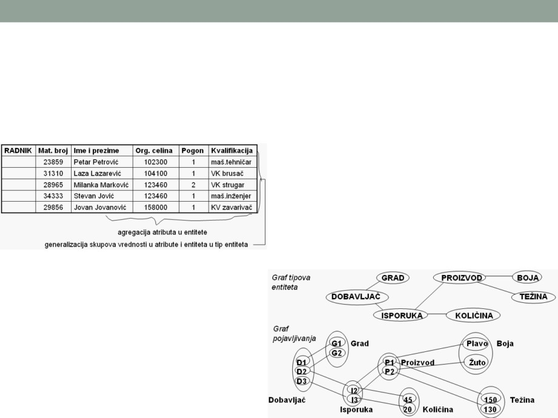
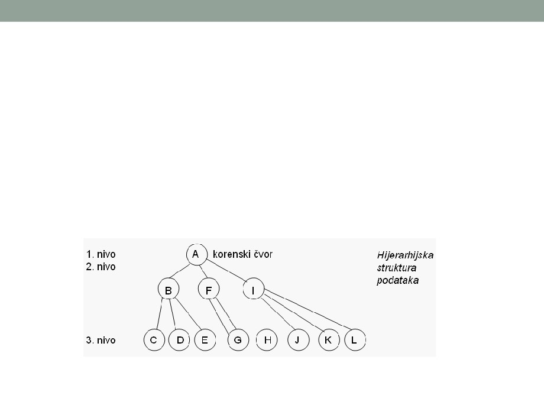
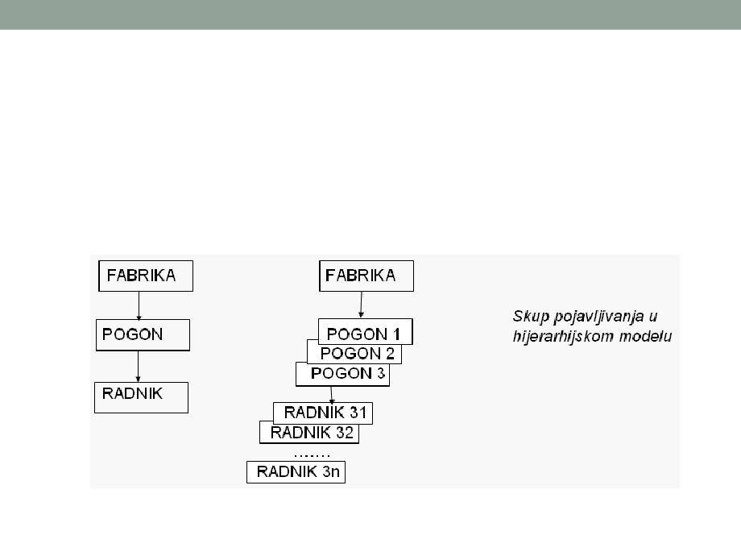
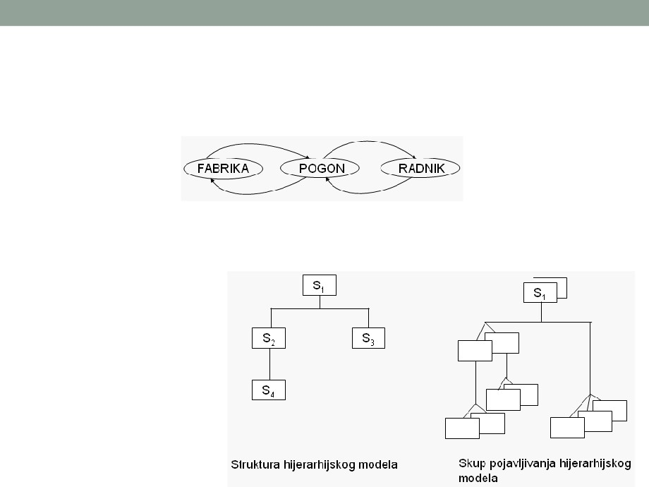
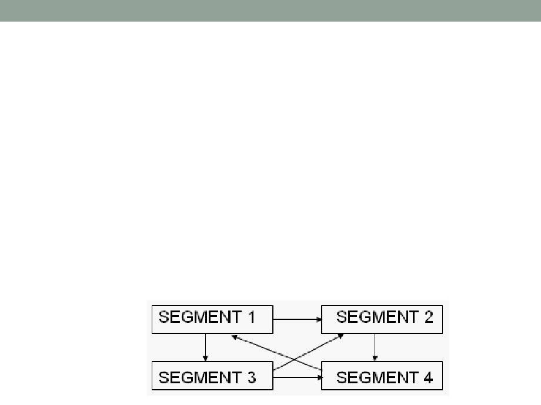
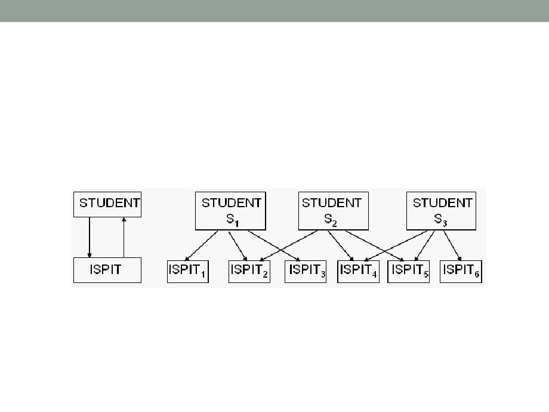
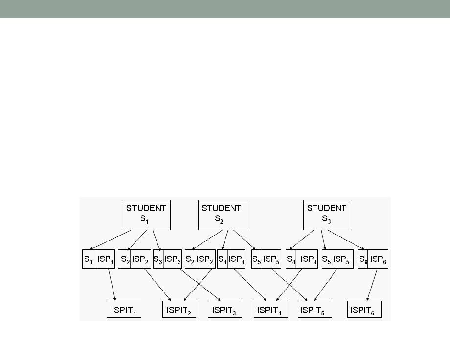

Uvod
• Model podataka je strukturisani skup informacija o
prošlosti i sadašnjosti sistema, potreban da bi se pod
dejstvom budućih poznatih ulaza odredili budući izlazi iz
sistema.
• Model podataka je polazna osnova za projektovanje baze
podataka i njene realizacije pomoću konkretnog sistema
za upravljanje bazom podataka
Karakteristike modela podataka
• Model podataka treba da bude:
• semantički bogat konceptima - treba da se što više znanja o
realnom sistemu unese u bazu podataka na eksplicitan, prirodan,
konzistentan i nedvosmislen način, da se baza podataka učini što
"inteligentnijom“
• relativan - treba da podrži relativizam različitih pogleda na realni
sistem, i to kako iz različitih uglova posmatranja na istom nivou
apstrakcije tako i na različitim nivoima apstrakcije
• fizički nezavisan - treba da se zasniva na konceptima bliskim
realnom sistemu, a ne na konceptima bliskim računaru kao što su
zapis, pokazivač i sl.
• pogodan za dalje projektovanje i realizaciju - da su koncepti
ograničeni i operatori tako definisani da omogućavaju formalno
projektovanje logičke i fizičke baze podataka
• takav da ga je moguće realizovati preko nekog sistema za
upravljanje bazom podataka.
Pristup modelovanju
• Direktno modelovanje na osnovu poznavanja sistema i
zakonitosti koje u njemu vladaju, odnosno na osnovu
poznavanja objekata sistema, njihovih atributa i veza (tzv.
dugoročni modeli);
• Identifikacija na bazi poznavanja ulaza i izlaza
informacionog sistema (tzv. kratkoročni modeli); pri
modelovanju na bazi poznavanja ulaza i izlaza mogu se
koristiti Warnierovi dijagrami (inače sredstvo za
projektovanje programa) i kao model podataka.
• Analiza i sinteza (postupku analize odgovara pristup od
vrha na dole - Top Down, a postupku sinteze pristup
odozdo na gore - Bottom Up).
Pojmovi
• Šema modela podataka je skup klasa ili kategorija, njihovih
osobina i veza između njih.
• Baza podataka je skup podataka strukturisanih na način
opisan u šemi. To je skup svih pojavljivanja entiteta navedenih
tipova (kategorija), skup svih njihovih osobina i skup veza
između njih.
• Jezik za definiciju podataka (Data Definition Language -
DDL) predstavlja skup generičkih pravila G pomoću kojih je
moguće definisati (opisati) šemu.
• Model podataka je jedinstveni način predstavljanja skupa
podataka i njihove interpretacije preko strukture podataka,
skupa ograničenja i skupa operatora. Model podataka čine tri
osnovne komponente:
• struktura
• ograničenja
• operatori
Pojmovi
•
Osnovni problem u modelovanju (pa i u formiranju modela podataka)
je savlađivanje složenosti u opisu sistema. Složenost se savlađuje
hijerarhijskim opisom sistema, što znači da se na višim nivoima
strukture daje jasniji opšti opis sistema, a na nižim nivoima detaljniji
opis. Takav pristup u modelovanju naziva se apstrakcija.
•
Apstrakcija je kontrolisano uključivanje detalja u opis sistema,
izostavljanje detalja u pojedinim fazama (na pojedinim nivoima
apstrakcije) i predstavljanje samo zajedničkih opštih osobina
pojedinih koncepata. Apstrakcijom se zanemaruju nebitne osobine
realnog sistema a takođe i nebitne veze, tako da se u model unose
samo one opšte, bitne jer model treba da odslika realni sistem.
Apstrakcija se ostvaruje postupcima agregacije i generalizacije.
•
Agregacija je tip apstrakcije u kojoj se skup objekata i njihovih veza
posmatra kao objekat višeg nivoa.
•
Generalizacija je tip apstrakcije u kojoj se skup sličnih objekata
tretira kao generički objekat. Inverzni postupak od generalizacije je
specijalizacija.
Pojmovi
•
Postupkom generalizacije se skup objekata iste vrste predstavlja
odgovarajućim tipom entiteta (npr. radnik, direktor, sekretarica,
inženjer,… se agregiraju u tip entiteta ZAPOSLENI).
•
Osobine entiteta opisuju se atributima, koji uzimaju vrijednosti iz
odgovarajućih domena, pri čemu se domen definiše kao homogeni
skup podataka.
•
Atributi se agregiraju u tip entiteta (npr. Marko Marković, Janko
Janković, Ivana Ivanović,… čine atribut IME, Njegoševa 25,
Moskovska 32, Slobode 16,… čine atribut ADRESU, itd). Dakle, tip
entiteta se dobija generalizacijom skupa pojedinačnih entiteta iste
vrste ili agregacijom skupa atributa.
•
Generalizacija se može koristiti za dalje uopštavanje i stvaranje tipova
opštijeg (višeg) nivoa a agregacija za grupisanje postojećih tipova
entiteta u nove tipove. Ukoliko se agregiraju atributi različitih objekata,
takva agregacija se može tretirati kao stvaranje "veze" između tih
objekata.
•
I agregacija i generalizacija imaju jednostavnu matematičku
interpretaciju i opisuju se preko relacija
Komponente modela podataka
•
Struktura podataka - u opštem slučaju, pod strukturom neke cjeline se
podrazumijevaju elementi koji tu cjelinu čine kao i veze koje između tih
elemenata postoje.
• Osnovni elementi strukture modela podataka su entiteti.
• Objekti / entiteti imaju svoje karakteristične osobine koje se zovu atributi.
• Formalno se prikazuju kao E = E(a1, a2, … an), gdje je E ime entiteta a ai, i = 1, 2,
… n atributi.
• Svaki od atributa u konkretnom slučaju ima svoju vrijednost, koju uzimaju iz
odgovarajućeg domena. Jedan atribut može da ima samo jedan domen, ali može da
bude više različitih atributa zadato nad istim domenom.
•
Atributi se identifikuju na osnovu:
• zahtjeva korisnika;
• poslovne dokumentacije;
• dokumentacije informacionog sistema.
•
Svaki entitet može imati proizvoljan broj atributa, dok obrnuto ne važi -
određeni atribut može pripadati samo jednom entitetu.
•
Svako pojavljivanje entiteta ima vrijednosti za sve atribute. Može se
dogoditi da neka pojavljivanja ostanu bez vrijednosti atributa, pa kažemo
da imaju nultu vrijednost (npr. nepopunjena radna mjesta po
organizacionoj šemi imaju nulte vrednosti atributa).
Komponente modela podataka
• Jedan ili više atributa koji jednoznačno određuju svaki entitet u klasi
entiteta predstavlja ključ klase entiteta.
• Ključ je atribut (ili skup atributa) koji je jednoznačan i nepromjenljiv. Zato
kriterijumi za izbor ključa treba da budu: jednoznačnost, nepromjenljivost
i raspoloživost.
• Između elemenata strukture postoje određene veze odn. relacije. Dvije
klase entiteta mogu biti povezane relacijama. Veza odn. relacija je
određeno združivanje među entitetima i predstavlja se kao
R (E1, E2, … Em, a1, a2, …an), gdje su: Ei, i=1, 2,…m klasa
entiteta, aj, j=1,2,…n
atributi relacija (i relacije imaju svoja obeležja -
atribute).
• Skup svih relacija nad istim klasama entiteta zove se klasa ili vrsta
relacije.
• Prosta asocijacija (tip 1) - jednom elementu jednog skupa odgovara samo jedan
element drugog skupa
• Uslovna asocijacija ili parcijalno preslikavanje (tip C) - jednom elementu jednog
skupa odgovara jedan ili nijedan element drugog skupa
• Složena ili višeznačna asocijacija (tip M)- jednom elementu jednog skupa odgovara
nijedan, jedan ili više elemenata drugog skupa

Predstavljanje strukture podataka
• Preko tabele
• Preko grafa
Ograničenja modela podataka
•
Predstavljaju svojstva entiteta, atributa i veza koja omogućavaju da
se što adekvatnije opiše realni sistem i sa druge strane očuva
integritet baze podataka, tj. ona omogućavaju da sistem za
upravljanje bazom podataka (SUBP) održava samo dozvoljeno stanje
baze podataka. Zato se za njih ponekad koristi naziv pravila
integriteta.
•
Ograničenja modela podataka predstavljaju logičke granice
postavljene kako na pojedine podatke tako i na njihove međusobne
veze. Zato treba definisati skup ograničenja kojima se iskazuju
dozvoljena stanja sistema i dozvoljeni načini prelaska iz stanja u
stanje.
• Ograničenja prve vrste mogu biti pravila kojima se specificira dopustivo
stanje atributa. Mogu da se odnose na ograničenja vrijednosti atributa (npr.
fizičko stanje zaliha u skladištu ne može biti negativno). S obzirom da atributi
uzimaju vrijednosti iz domena, ograničenja podataka zavise od ograničenja
domena. Međutim, ograničenja mogu da zavise i od vrijednosti podataka.
• Druga vrsta ograničenja iskazuje dozvoljena stanja prelaza i predstavlja
ograničenja veza u vidu minimalnog i maksimalnog broja veza. Npr. u vezi
"RADI NA" između entiteta RADNIK i POSAO može se navesti koliko najmanje
i najviše radnika radi na jednom poslu.
Operatori
• Operatori su komponente modela podataka kojima se iskazuje dinamičnost
realnog sistema, a time i prelazak baze podataka iz jednog stanja u drugo.
• Da bi se izvršila bilo koja operacija nad podacima u bazi podataka, mora prvo
da se izvrši selekcija dijela baze podataka nad kojim će te operacije da se
izvrše.
• U zavisnosti od selekcije dijela baze podataka, razlikuju se sledeće vrste
operatora:
• navigacioni - ako selekcija odabira pri svakom pozivu samo jedan entitet ili vezu (zapis, n-torku)
na taj način što slijedi logički put (navigaciju) kroz strukturu baze podataka
• specifikacioni
- biranje (selekcija) može da se specificira logičkom pozicijom, što znači da
podaci mogu da se izdvoje prema logičkoj poziciji u šemi odnosno tabeli ili grafu, tako da
možemo da izdvojimo npr. prvi ili zadnji red u tabeli ili grafu:
• na osnovu veza između podataka;
• na osnovu tekućih vrijednosti.
• kombinovani operatori - kombinacija navigacionih i specifikacionih
Operatori
• Ako selekcija odabira grupu objekata (entiteta) ili veza pri
jednom pozivu i od njih formira (specificira) nove strukture baze
podataka, odgovarajući operatori se nazivaju specifikacioni
operatori.
• Operatori specifikacije u sistemu definišu novu strukturu
(podmodel) koji treba izvući iz datog modela.
• Operatori definišu novu tabelu iz skupa tabela koje su pod
dejstvom operatora.
• Navigacionim i specifikacionim operatorima se izdvajaju
pojedinačni podaci ili manji delovi baze podataka, nad kojima
se mogu izvršiti operacije kao što su:
• ažuriranje;
• sažimanje baze podataka;
• izdvajanje vrijednosti koje nisu eksplicitno sadržane u bazi podataka
(sume, prosjeci, minimalne i maksimalne vrijednosti i sl.
• izvršavanje radnih procedura za očuvanje integriteta baze podataka i
sl.
Vrste modela podataka
•
Prva generacija:
•
Druga generacija:
• funkcionalni,
• model objekti - veze,
• hijerarhijski,
• prošireni relacioni model,
• mrežni,
• semantičke mreže,
• klasični relacioni modeli
• SDM model.
• Warnierovi dijagrami.
•
Njihove opšte
•
Po opštim
karakteristike su:
karakteristikama, to su:
• semantički bogati, sa
molekularnom semantikom,
• semantički nedovoljno bogati
modeli, bez molekularne
• fizički nezavisni
semantike;
• još nisu realizovani pomoću
• relativno fizički zavisni;
komercijalnih sistema za
upravljanje bazom podataka.
• realizovani pomoću
komercijalnih sistema za
upravljanje bazom podataka.

Hijerarhijski model podataka
• Hijerarhijski model podataka koristi se od 60-tih godina.
• Podaci se organizuju u vidu hijerarhijske strukture koja
podsjeća na stablo, sastavljene od čvorova i grana.
• Hijerarhijsko stablo je u stvari "prevrnuto stablo", kod
koga je "korijen" na vrhu a grana se naniže.
Hijerarhijski model podataka
•
Čvor na vrhu je korjenski (Root) čvor i to je nezavisni čvor a zavisni
čvorovi su na nižim nivoima.
•
U hijerarhijskom modelu podataka čvorovi predstavljaju skupove
funkcionalnih segmenata (povezanih elemenata podataka) ili zapisa,
kojima se opisuju objekti sistema (zapisi se koriste u logičkoj, a
segmenti u fizičkoj strukturi).
•
Segment na korjenskom čvoru naziva se korjenski segment. Svi drugi
segmenti svrstani su u hijerahijske nivoe, sa vezama između
segmenata na susjednim nivoima.
• Ako se posmatraju dva povezana segmenta na susjednim nivoima, segment
na višem nivou naziva se "roditelj" a za njega vezani segmenti nižeg nivoa su
"djeca".
• Veza segmenta tipa "roditelj" sa segmentima tipa "djeca" je 1:m. Pristup
svakom segmentu izuzev korjenskom segmentu vrši se preko segmenata
"roditelja" - pristup svakom segmentu je jedinstven, odozgo na dolje niz
hijerarhiju stabla (npr. do segmenta K na prethodnoj šemi se dolazi isključivo
putanjom A-I-K).
• Pristupni putevi su tačno određeni.

Hijerarhijski model podataka
• Primjer: entitet FABRIKA, POGON i RADNIK
• Kako su podaci organizovani

Hijerarhijski model podataka
• Odnosi između navedenih entiteta mogu se prikazati:
• Preslikavanje FABRIKA - POGON i POGON - RADNIK je tipa
m (višestruko) a u obrnutom smjeru tipa 1, tj. POGON -
FABRIKA i RADNIK - POGON je jednostruko; to je veza 1 : m
(roditelji - deca).
Hijerarhijski model podataka
Dobre strane:
Nedostaci:
• korisnici lako shvataju hijerarhijsku
• do zapisa na nižem hijerarhijskom
strukturu kao prirodan opis realnog
nivou može se doći samo preko
sistema, pa se i razumijevanje
svih zapisa na višim hijerarhijskim
sistema lako postiže;
nivoima;
• omogućavaju postepeno
• česta pojava redundantnih
povećavanje detaljnosti u razradi
podataka;
sistema;
• anomalije u operaciji ažuriranja (pri
• postoji standardizovana navigacija;
dodavanju i brisanju podataka).
• postoji sistem za upravljanje bazom
podataka (SUBP) koji je baziran na
hijerarhijskom modelu (npr. IBM-ovi
sistemi IMS - Information
Management System i DL/I - Data
Language 1)
Hijerarhijski model podataka se sve rjeđe koristi.

Mrežni model podataka
• Ovaj model predstavlja skup međusobno povezanih
podataka u kome preslikavanje između segmenata
principijelno može biti bilo kog tipa.
• Mrežni model se zasniva na orijentisanim grafovima
opšteg tipa čiji čvorovi u stvari predstavljaju klase entiteta,
pri čemu je klasa entiteta skup nastupajućih elemenata, a
linije grafa predstavljaju odgovarajuće veze (npr. izlazak
studenta na ispit - polaganje predmeta).
• Grafički se mrežni model može predstaviti kao:
Mrežni model podataka
• Segmenti (zapisi) su prikazani pravougaonicima a linije sa strelicama
prikazuju veze među segmentima.
• Jedan isti objekat može biti i nadređeni i podređeni, za razliku od
hijerarhijskog, u kome je samo korjenski objekat nezavisan (nadređen
svima ostalima) a ostali su uređeni po hijerarhijskim nivoima.
• Kod mrežnog modela se pojam nadređenih i podređenih segmenata
širi.
• U mrežnim modelima se uvodi pojam seta, preko koga se iskazuju
veze između segmenata.
• Set je takav tip veze između dva segmenta kod koga jednom pojavljivanju
jednog segmenta odgovara jedno ili više pojavljivanja drugog segmenta.
• Svaki segment ima svoje ime koje označava tip entiteta a usmjerena
linija (strelica) označava vezu među segmentima.
• Segment od koga polazi usmjerena linija naziva se "vlasnik" (Owner) seta, a
segment na koji pokazuje strelica je “član" (Member) seta. Na taj način tip seta
ustvari prestavlja logičku vezu 1:m.

Mrežni model podataka
• Primjer: veza STUDENT - ISPIT, tipa m:m (jedan student
može da polaže više ispita, na jedan ispit izlazi više
studenata):

Mrežni model podataka
• Veze tipa m:m su nepoželjne i teško ih je kontrolisati, pa
se radi njihove eliminacije uvodi i treći tip segmenata, tzv.
"vezni" (X) segment.
• Preko veznih segmenata se veze tipa m:m prevode u vezu m:1
(posmatrano od veznog segmenta) pa u vezu 1:m, kao na sledećoj
šemi:
Mrežni model podataka
Dobre strane:
Nedostaci:
• izbjegavanje redundantnosti podataka;
• pogodniji su za realizaciju na računaru,
nego za opis realnog sistema (bliži
• izbjegnute su anomalije pri ažuriranju
računaru nego realnom sistemu);
podataka (način realizacije preslikavanja
m:m je takav da se izbjegavaju problemi
• teža navigacija i aplikativno programiranje,
koji su se javljali kod hijerarhijskog
jer aplikativni programi moraju da
modela);
"poznaju" logičku organizaciju baze
podataka kako bi moglo da se pristupi
• gotovo uvijek se može postići saglasnost
odgovarajućim setovima i segmentima;
strukture upita i strukture modela;
• mrežne baze podataka koje su bazirane na
• niz komercijalnih sistema za upravljanje
mrežnom modelu se sastoje iz velikog
bazom podataka (npr. DMS 1100
broja segmenata - zapisa koji sadrže malu
korporacije Univac, TOTAL korporacije
količinu informacija i veliki broj pokazivača
Cincom itd).
prema drugim skupovima zapisa, što
mrežni model čini složenim za
implementaciju i loše utiče na performanse
mrežne BP